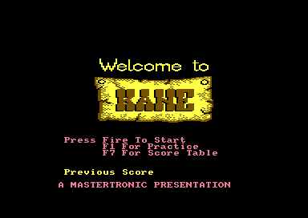
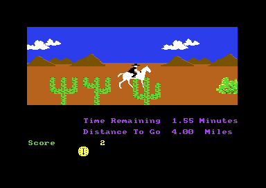

<meta charset="utf-8">
<meta name="viewport" content="width=device-width, initial-scale=1">
<title>Kane</title>
<link rel="preconnect" href="https://fonts.googleapis.com">
<link rel="stylesheet" href="https://fonts.googleapis.com/css2?family=Lato:wght@400;700;900&family=IBM+Plex+Mono:wght@400;500&display=swap">
<style>
:root{
  --bg:#23262d; --paper:#e9e7e1; --surface:#ffffff; --surface-2:#f1efea; --line:#d5d3cc; --line-soft:#e0ded8;
  --ink:#2f3136; --ink-soft:#55585f; --ink-mute:#80838a;
  --link:#1f5fa8; --link-hover:#154480; --accent:#1f5fa8;
  --amber:#c25a00; --cyan:#1f5fa8; --coral:#d04a3a; --green:#2a8a4a; --violet:#4a5bd6; --hl:#fff0c2;
  --chip:#2f3136; --chip-ink:#ffffff;
  --c64blue:#40318d; --c64grey:#686868;
  --fd:'Lato',system-ui,sans-serif; --fb:'Lato',system-ui,sans-serif; --fm:'IBM Plex Mono',ui-monospace,Menlo,monospace;
  --col:1080px; --gx:68px; --fs:17px; --lh:1.6; --hw:900; --h1:46px; --h2:26px; --sy:48px; --pp:26px; --r:10px;
  --plate-shadow:0 1px 2px rgba(0,0,0,.05),0 4px 14px rgba(0,0,0,.05);
}
*{box-sizing:border-box}
html{background:var(--bg);min-height:100%}
body{background:var(--paper);color:var(--ink);font-family:var(--fb);font-size:var(--fs);line-height:var(--lh);max-width:var(--col);margin:0 auto;min-height:100vh;padding:0 0 4rem}
h1,h2,h3{font-weight:var(--hw);letter-spacing:-.01em;text-wrap:balance;color:var(--ink);margin:0}
.wrap{padding:0 var(--gx)}
.hero{padding:48px var(--gx) 8px;text-align:left}
.eyebrow{font-family:var(--fm);font-size:12px;letter-spacing:.08em;text-transform:uppercase;color:var(--ink-mute);margin:0 0 10px}
.hero h1{font-size:var(--h1);line-height:1.15;letter-spacing:-.02em;margin:0 0 14px}
.hero .sub{margin:0 0 .6em;color:var(--ink-soft)}
section{padding:var(--sy) 0 24px}
section:last-of-type{border-bottom:none}
.fig{font-family:var(--fm);font-size:12px;letter-spacing:.08em;text-transform:uppercase;color:var(--ink-mute);margin:0 0 10px}
h2.t{font-size:var(--h2);margin-bottom:12px}
.lede{color:var(--ink-soft);margin:0 0 30px}
.plate{background:var(--surface);border:1px solid var(--line);border-radius:var(--r);padding:var(--pp);box-shadow:var(--plate-shadow)}
.cap{font-size:14px;color:var(--ink-mute);margin-top:14px;line-height:1.55}
.cap b{color:var(--ink);font-weight:700}
code{font-family:var(--fm);font-size:.82em;background:var(--chip);color:var(--chip-ink);border-radius:4px;padding:2px 6px;white-space:nowrap}

.kn-cv{display:block;width:100%;height:auto;image-rendering:pixelated;background:#000;border-radius:4px}
.kn-stack{position:relative}
.kn-stack canvas+canvas{position:absolute;left:0;top:0;background:transparent}
.kn-bar{display:flex;flex-wrap:wrap;gap:8px;margin:0 0 14px}
.kn-btn{font:inherit;font-family:var(--fm);font-size:12.5px;background:var(--surface);border:1px solid var(--line);border-radius:6px;padding:5px 11px;color:var(--ink);cursor:pointer;line-height:1.3}
.kn-btn:hover{border-color:var(--ink-mute)}
.kn-btn[aria-pressed="true"]{background:var(--accent);border-color:var(--accent);color:#fff}
.kn-out{font-size:15px;color:var(--ink);margin:12px 0 0;min-height:3em;line-height:1.55}
.kn-two{display:grid;grid-template-columns:minmax(0,1fr) minmax(0,1fr);gap:22px;align-items:start}
.kn-two figure{margin:0}
.kn-two img{display:block;width:100%;height:auto;image-rendering:pixelated;border-radius:4px}
.kn-two figcaption{font-size:13px;color:var(--ink-mute);margin-top:6px}
.kn-tbl{border-collapse:collapse;font-size:14px;width:100%;margin:4px 0 0}
.kn-tbl th,.kn-tbl td{text-align:left;vertical-align:top;padding:5px 8px;border-bottom:1px solid var(--line-soft)}
.kn-tbl th{font-weight:700;color:var(--ink-soft)}
.kn-tbl td.kn-n{font-family:var(--fm);font-size:13px;white-space:nowrap}
.kn-range{display:flex;align-items:center;gap:12px;margin:12px 0 0;font-family:var(--fm);font-size:13px}
.kn-range input{flex:1}
.kn-key{display:flex;flex-wrap:wrap;gap:6px 16px;font-size:13px;color:var(--ink-soft);margin:8px 0 0}
.kn-key i{display:inline-block;width:11px;height:11px;border-radius:2px;margin-right:6px;vertical-align:-1px}
@media (max-width:720px){.kn-two{grid-template-columns:1fr}}
</style>
<!-- tabs -->
<header class="hero">
  <p class="eyebrow">1985 · Mastertronic</p>
  <h1>Kane</h1>
  <p class="sub">A budget western in four stages. Every picture is unpacked a byte at a time, slowly enough to watch, and each ride is a strip of 400 characters built from nine obstacles, where the video chip itself reports the horse's fall.</p>
</header>
<main class="wrap">

<section>
  <p class="fig">01 · The game</p>
  <h2 class="t">The game</h2>
  <p>You are the Marshall of Kane, a town at war with the Wagari Indians. The game is four stages played in a loop. In the canyon you shoot ducks with a bow and arrow, and every few ducks you hit earn a peace token, the game's word for a life. Then you ride to Kane against the clock, jumping the bushes and rocks in your path. In the town, twelve bad guys pop up from windows, doors and wagons, and you shoot them before they shoot you. Last you ride after a train and pass its coaches until it stops.</p>
  <p>After the train the canyon comes round again one level higher. There are three levels, and after the third train the game shows its ending. A fall from the horse or a shot from a gunman costs a token, and with none left the game is over.</p>
  <div class="kn-two">
    <figure><figcaption>The title screen.</figcaption></figure>
    <figure><figcaption>The ride to Kane, the second stage.</figcaption></figure>
  </div>
  <p>The game reads a joystick in port 2. On a ride, F1 starts the ride again with no token lost. The RESTORE key does nothing: the game points the address that RESTORE jumps to at an instruction that only returns (<code>nmi_ignore</code>, <code>$3162</code>).</p>
</section>

<section>
  <p class="fig">02 · The music</p>
  <h2 class="t">Music: the William Tell Overture</h2>
  <p class="lede">The game has one tune, the finale of Rossini's William Tell Overture, its trumpet call and then the galop. The tune plays on the title screen and on the ride to Kane, and again at the end of the game, slowing down as it goes.</p>
  <div class="plate"><div id="kn-sid"></div>
  <p class="cap">The page runs the game's own music player, <code>music_step</code> at <code>$9492</code>, on the kit's 6502 with its code and tables from the listing, once a frame, as the game's raster interrupt calls it. A raster interrupt is a routine the video chip starts when it reaches a chosen line of the screen. The filter is on, with the cutoff curve of one 6581 chip, since the game sets the filter for this tune (<code>$96A8</code>). A test beside this page runs the same calls on the game's code and compares every write to the sound chip, frame by frame.</p></div>
  <p>Each voice reads two bytes an event. The first byte's top two bits pick one of three instruments and its low six bits give the note's length in steps. The second byte is the note, 0 for a rest. A step is six frames (<code>tempo</code>, <code>$9640</code>), so a note of length one lasts about an eighth of a second. The gate is turned off two frames before a note ends, which gives each note a short gap and the galop its bounce. When voice 1 reaches <code>$9A3C</code> the tune starts again.</p>
  <p>At the end of the game the tune should slow at nine places, listed in <code>tune_slowdowns</code> (<code>$8E5D</code>). It slows at two: the ending's button above plays it as the game does, and <a href="discoveries.html">Discoveries</a> says why.</p>
</section>

<section>
  <p class="fig">03 · One frame of the ride</p>
  <h2 class="t">One frame of the first ride, rebuilt</h2>
  <p class="lede">The ride's screen is eight bands, one above the other, each set up by its own raster interrupt as the picture is drawn. Press a band to see what its handler changes.</p>
  <div class="plate">
    <div class="kn-bar" id="kn-bands"></div>
    <div class="kn-stack"><canvas id="kn-frame" class="kn-cv" width="768" height="544"></canvas><canvas id="kn-frame-over" class="kn-cv" width="768" height="544"></canvas></div>
    <p class="kn-out" id="kn-band-out"></p>
    <p class="cap">Drawn by the site's C64 library from one whole frame recorded in the emulator: the memory as the frame began and every write to the video chip, with the line and cycle it happened on. Every one of its 104,448 pixels matches the emulator's own picture of the same frame.</p>
  </div>
  <p>The interrupts are a chain. Each handler sets the line of the next and puts the next handler's address in the interrupt vector (<code>$0314</code>), and the last one, <code>irq_ride_control</code> on line <code>$AF</code>, points back at the first. The top handler shows a screen of characters at <code>$4000</code> drawn from the ride's character set at <code data-part="">$7800</code>. Two lower down make the band of ground multicolour and change its colours. One at line <code>$9A</code> reuses all eight sprites, stretched to double width, as a black strip across the seam where the picture changes to the status lines. The handlers also do the ride's work, which is why the game's own loop can run without waiting for a frame: <code>irq_ride_control</code> reads the stick and scrolls the band, and the top handler counts the clock down.</p>
</section>

<section>
  <p class="fig">04 · The pictures</p>
  <h2 class="t">Pictures drawn from a packed stream</h2>
  <p class="lede">Before each stage the game draws its picture a byte at a time, slowly enough to watch. The canyon takes about a second.</p>
  <div class="plate">
    <div class="kn-bar" id="kn-pics"></div>
    <canvas id="kn-pic" class="kn-cv" width="640" height="400"></canvas>
    <p class="kn-out" id="kn-pic-out"></p>
    <p class="cap">Drawn with the page's port of the game's three unpacking routines, from the packed bytes in the listing, at the pace the game's own routine runs on the kit's 6502. A test beside this page checks the port against the game's code byte for byte for all four pictures.</p>
  </div>
  <p>A picture is a multicolour bitmap of 8,000 bytes, 1,000 bytes of screen colours and 1,000 colours for colour memory, 9,500 bytes in all once two colours share a byte. The game keeps four, and keeps each packed in three streams. <code>unpack_bitmap</code> (<code>$0D84</code>) copies a byte as it is, unless the byte is <code>$00</code>, <code>$55</code>, <code>$AA</code> or <code>$FF</code>, the four bytes whose four pixels are all one colour; one of those is followed by a count of how many times to write it. <code>unpack_runs</code> (<code>$0DFB</code>) reads pairs of a count and a value, for the colours. After each byte of the bitmap the game waits a little (<code>short_delay</code>, <code>$0E31</code>), and that pause is what makes the drawing visible.</p>
  <table class="kn-tbl" id="kn-pic-tbl"><thead><tr><th>Picture</th><th>Bitmap</th><th>Screen colours</th><th>Colour memory</th><th>Packed</th><th>Unpacked</th></tr></thead><tbody></tbody></table>
  <p>The streams lie under the machine's ROMs and its input and output chips, where the processor cannot normally see. The routines switch them all out of the way (<code>cpu_port</code>, <code>$01</code>, set to 0) for each byte they read. Every picture is drawn in <a href="levels.html">Maps / levels</a>.</p>
</section>

<section>
  <p class="fig">05 · The rides</p>
  <h2 class="t">A course of 400 characters</h2>
  <p class="lede">Each ride's ground is a strip 400 characters long and five high, built from nine obstacles before the ride starts. The screen shows forty characters of the strip at a time.</p>
  <div class="plate">
    <div class="kn-bar" id="kn-rides"></div>
    <canvas id="kn-course" class="kn-cv" width="640" height="80"></canvas>
    <div class="kn-range"><span>start</span><input type="range" id="kn-course-pos" min="0" max="360" value="0" aria-label="Position along the course"><span id="kn-course-at">0.00 miles</span></div>
    <canvas id="kn-strip" class="kn-cv" width="800" height="10" style="margin-top:10px"></canvas>
    <p class="kn-out" id="kn-course-out"></p>
    <p class="cap">The strip is built by the page's port of <code>build_ride_screen</code> (<code>$2D08</code>) from the placement lists in the listing, and drawn with the ride's character set and the colours its raster handlers set. A test beside this page builds both courses on the game's own code and compares them byte for byte.</p>
  </div>
  <p>The obstacles are nine blocks of five by five characters (<code>ride_objects</code>, <code>$0EC2</code>). A placement list gives pairs of a step along the strip and an object number: ride 1's is at <code>$0B00</code> and the train's at <code>$0B70</code>. <code>place_object</code> (<code>$2F7B</code>) copies each object's five rows into the strip, whose rows are 400 bytes apart.</p>
  <p>While the horse moves, <code>irq_ride_control</code> scrolls the band by the horse's speed, and <code>copy_map_window</code> (<code>$301B</code>) copies the next forty characters when it has moved a whole one. A character is 0.01 mile, so the ride's 4.00 miles are the strip's 400 characters. <a href="levels.html">Maps / levels</a> draws both strips whole.</p>
  <p>The horse falls when sprites 5, 6 or 7, its legs, touch the band's characters (<code>irq_ride_sprites</code>, <code>$2980</code>). The video chip reports that touch itself, in its sprite-to-background collision register.</p>
</section>

<section>
  <p class="fig">06 · The shoot-out</p>
  <h2 class="t">How a gunman picks where to appear</h2>
  <p class="lede">The bad guys come out of sixteen fixed places, four at a time at most. Press a place to see how its gunman appears.</p>
  <div class="plate">
    <div class="kn-stack"><canvas id="kn-town" class="kn-cv" width="640" height="400"></canvas><canvas id="kn-town-over" class="kn-cv" width="640" height="400" style="cursor:pointer"></canvas></div>
    <div class="kn-key"><span><i style="background:#ffd34d"></i>rises from below</span><span><i style="background:#ff6b5b"></i>slides in from the right</span><span><i style="background:#5bc0ff"></i>slides in from the left</span></div>
    <p class="kn-out" id="kn-town-out"></p>
    <p class="cap">The town is drawn from the listing as the game unpacks it, and each place from the table at <code>$9169</code>: its x (whose lowest bit doubles as the ninth bit of the sprite's position), its y, and its kind. Each box is where the gunman's figure is drawn inside his sprite.</p>
  </div>
  <p>Four sprites, 3 to 6, carry the gunmen. Every fifth pass of the shoot-out's loop, <code>gunmen_appear</code> (<code>$3E77</code>) counts down a delay for each free sprite, and gives it a place when the delay runs out. <code>gunmen_appear</code> picks the place at random by mixing CIA 1's timer with the raster line, the line the video chip is drawing. A gunman is tiny, eight pixels wide and five to eleven lines tall, and the game draws him into his sprite a row at a time as he comes out (<code>gunman_step</code>, <code>$8810</code>). He waits seven steps, fires once at the gunmen's aim, and goes back the way he came.</p>
  <p>The check that a place is free reads the wrong byte, so two gunmen can share a place. <a href="discoveries.html">Discoveries</a> has the details.</p>
</section>

<section>
  <p class="fig">07 · The effects</p>
  <h2 class="t">Sound: the effects</h2>
  <p class="lede">The canyon's drum, the arrow's whistle, the two kinds of gunshot and the train's hoofbeats are short routines that set the sound chip once a frame.</p>
  <div class="plate"><div id="kn-sfx"></div>
  <p class="cap">The page runs each effect's own routine from the listing on the kit's 6502 once a frame, as <code>play_effects</code> (<code>$91E7</code>) and <code>play_music</code> (<code>$9475</code>) call them, after setting the bytes the game sets when the effect starts. The test beside this page holds every write against the game's code. The drum is a low note: laptop and phone speakers play it quietly.</p></div>
  <p>Each effect has a bit in <code>effects</code> (<code>$23</code>): bit 7 the Marshall's shot, bit 6 a gunman's, bit 5 the whistle, bit 4 the drum. The shots and the whistle clear their own bit when they end. The drum's bit stays set until the stage ends, so the drum beats for the whole canyon, every fifteen frames, a high note on one beat in four. The hoofbeats belong to the train. They are noise on all three voices, struck once a period that starts at 20 frames and shortens by a frame at each beat, so the train speeds up as the gallop does (<code>hoof_sound</code>, <code>$96FF</code>).</p>
</section>

<section>
  <p class="fig">08 · The samples</p>
  <h2 class="t">Sound: a duck's cry is the Marshall's death, sped up</h2>
  <p class="lede">A hit duck, a hit gunman, the Marshall's death, the horse's whinny and a man's voice saying “Well done” at the end of the game are recordings, one bit a sample, played while the whole game stops.</p>
  <div class="plate">
    <div class="kn-bar" id="kn-samps"></div>
    <canvas id="kn-wave" class="kn-cv" width="800" height="120" style="background:#1d1f24"></canvas>
    <p class="kn-out" id="kn-samp-out"></p>
    <p class="cap">The page runs the game's own sample player on the kit's 6502, with a model of the timer it waits on, and turns each bit into a level: voice 1 held high, or low, scaled by the volume. The interrupts that still run during a sample would delay a bit here and there; the page leaves them out.</p>
  </div>
  <p>The player turns voice 1 into a switch. It sets the voice to a pulse wave of width <code>$FFF</code> with a frequency of 0, so the oscillator never moves and the output sits low. Setting the voice's test bit forces the output high. Each bit of the sample sets or clears the test bit (<code>$93E9</code>, <code>$93F0</code>), and CIA 2's timer A times the bits. The stream comes in blocks of a volume byte and sixteen bytes of bits, so the volume can change every 128 bits.</p>
  <p>Three of the cries are one recording, the hit sample at <code>$F3F0</code>, played at three speeds and three volumes: <code>sample_rate</code> (<code>$9449</code>) sets the length of a bit and <code>sample_volume</code> (<code>$9448</code>) is taken off each block's volume. A duck's cry is the same sound as the Marshall's death, played in about half the time and quieter.</p>
</section>

</main>
<footer style="margin:16px 0 0;padding:22px var(--gx) 0;border-top:1px solid #e0ded8;font-family:'IBM Plex Mono',ui-monospace,Menlo,monospace;font-size:12px;color:#80838a"><a href="https://github.com/gamesexplained/gamesexplained" style="color:#1f5fa8;text-decoration:none">GitHub</a> · <a href="https://discord.gg/3V9GWyRDWV" style="color:#1f5fa8;text-decoration:none">Discord</a><br>© Games Explained contributors. Write-ups, facts and symbol maps are available under <a href="https://creativecommons.org/licenses/by-sa/4.0/" style="color:#1f5fa8;text-decoration:none">CC BY-SA 4.0</a>; code under <a href="https://opensource.org/licenses/MIT" style="color:#1f5fa8;text-decoration:none">MIT</a></footer>
<script src="../../lib/c64.js"></script>
<script src="../../lib/sid.js"></script>
<script src="../../lib/cpu6502.js"></script>
<script type="application/json" id="kn-frame-data">{"schema":1,"standard":"PAL","lines":312,"cycles":63,"about":"","vic":[31,167,79,167,127,167,175,167,223,167,15,167,63,167,111,167,224,27,0,209,0,0,192,0,19,126,241,0,0,0,218,0,240,240,247,249,240,241,240,240,240,240,240,240,240,240,240],"cia2":[199,63],"cpu":[47,54],"writes":[[2,6,53276,2],[2,18,56576,198],[2,24,53272,15],[2,52,53265,16],[3,2,53264,0],[3,21,53263,124],[3,48,53262,195],[3,61,53294,241],[4,12,53261,124],[4,25,53293,241],[4,39,53260,171],[4,52,53292,241],[5,3,53259,124],[5,16,53291,241],[5,30,53258,147],[5,43,53290,241],[5,57,53257,103],[6,7,53289,241],[6,21,53256,195],[6,34,53288,241],[6,48,53255,103],[7,12,53254,171],[7,39,53253,103],[8,3,53252,147],[8,30,53251,106],[8,57,53250,174],[9,21,53249,191],[9,34,53281,248],[9,48,53248,160],[10,13,17407,159],[10,27,17406,157],[10,41,17405,155],[10,55,17404,158],[11,6,17403,156],[11,20,17402,154],[11,34,17401,202],[11,48,17400,0],[11,60,53269,254],[12,3,53281,246],[12,9,53282,248],[86,9,53270,208],[107,8,53281,248],[126,36,53282,247],[130,22,53275,255],[154,50,53269,255],[154,56,53276,0],[154,60,53275,0],[155,28,53294,240],[155,40,17407,15],[155,54,53293,240],[156,3,17406,15],[156,17,53292,240],[156,29,17405,15],[156,43,53291,240],[156,55,17404,15],[157,6,53290,240],[157,18,17403,15],[157,32,53289,240],[157,44,17402,15],[157,58,53288,240],[158,7,17401,15],[158,33,17400,15],[158,48,53264,224],[158,62,53263,167],[159,13,53262,111],[159,27,53261,167],[159,41,53260,63],[159,55,53259,167],[160,6,53258,15],[160,63,53257,167],[161,14,53256,223],[161,28,53255,167],[161,42,53254,175],[161,56,53253,167],[162,7,53252,127],[162,21,53251,167],[162,35,53250,79],[162,49,53249,167],[162,63,53248,31],[163,14,53277,255],[170,32,53272,19],[170,42,56576,199],[170,48,53265,27],[170,54,53281,240],[176,33,53277,0],[176,37,53270,192],[176,41,53269,0]],"colour":"AQEBAQEBAQEBAQEBAQEBAQEBAQEBAQEBAQEBAQEBAQEBAQEBAQEBAQEBAQEBAQEBAQEBAQEBAQEBAQEBAQEBAQEBAQEBAQEBAQEBAQEBAQEBAQEBAQEBAQEBAQEBAQEBAQEBAQEBAQEBAQEBAQEBAQEBAQEBAQEBAQEBAQEBAQEBAQEBAQEBAQEBAQEBAQEBAQEBAQEBAQEBAQEBAQEBAQEBAQEBAQEBAQEBAQEBAQEBAQEBAQEBAQEBAQEBAQEBAQEBAQEBAQENDQ0NDQ0NDQ0NDQ0NDQ0NDQ0NDQ0NDQ0NDQ0NDQ0NDQ0NDQ0NDQ0NDQ0NDQ0NDQ0NDQ0NDQ0NDQ0NDQ0NDQ0NDQ0NDQ0NDQ0NDQ0NDQ0NDQ0NDQ0NDQ0NDQ0NDQ0NDQ0NDQ0NDQ0NDQ0NDQ0NDQ0NDQ0NDQ0NDQ0NDQ0NDQ0NDQ0NDQ0NDQ0NDQ0NDQ0NDQ0NDQ0NDQ0NDQ0NDQ0NDQ0NDQ0NDQ0NDQ0NDQ0NDQ0NDQ0NDQ0NDQ0NDQ0NDQ0NDQ0NDQ0NDQ0NDQ0NDQ0NDQ0NDQ0NDQ0NDQ0NDQ0NDQ0NDQ0NDQ0NDQ0NDQ0NDQ0NDQ0NDQ0NDQ0NDQ0NDQ0NDQ0NDQ0NDQ0NDQ0NDQ0NDQ0NDQ0NDQ0NDQ0NDQ0NDQ0NDQ0NDQ0NDQ0NDQ0NDQ0NDQ0NDQ0NDQ0NDQ0NDQ0NDQ0NDQ0NDQ0NDQ0NDQ0NDQ0NDQ0NDQ0NDQ0NDQ0NDQ0NDQ0NDQ0NDQ0NDQ0NDQ0NDQ0NDQ0NDQ0NDQ0NDQ0NDQ0NDQ0NDQ0NDQ0NDQ0NDQ0NDQ0NDQ0NDQ0NDQ0NDQ0NDQ0NDQ0NDQ0NDQ0NDQ0NDQ0NDQ0NDQ0NDQ0NDQ0NDQ0NDQ0NDQ0NDQ0NDQ0NDQ0NDQ0NDQ0NDQ0NDQ0NDQ0NDQ0NDQ0NDQ0NDQ0NDQ0NDQQEBAQEBAQEBAQEBAQEBAQEBAQEBAQEBAQEBAQEDQ0NDQ0NDQ0NDQ0NDQ0NDQ0NDQ0NDQ0NDQ0NDQ0NDQ0NDQ0NDQ0NDQ0NDQ0NDQ0NAAAABAQEBAQEBAQEBAQEBAQEBAQEBAQEBAQEBAQEBAQAAAAAAAAAAAAAAAAAAAAAAAAAAAAAAAAAAAAAAAAAAAAAAAAAAAAAAAUFBQUFAAAAAAAAAAAHAAAAAAAAAAAAAAAAAAAAAAAAAAAAAAAAAAAAAAAAAAAAAAAHBwAAAAAAAAAAAAAAAAAAAAAAAAAAAAAAAAAAAAAAAAAAAAAAAAAABwcAAAAAAAAAAAAAAAAAAAAAAAAAAAAAAAAAAAAAAAAAAAAAAAAAAAAAAAAAAAAAAAAAAAAAAAAAAAAAAAAAAAAAAAAAAAAAAAAAAAAAAAAAAAAAAAAAAAAAAAAAAA==","ram":[{"a":969,"b":"////////////////////AAAAAAAAAAAAAAAAAAAAAAAAAAAAAAAAAAAAAAAAAAAAAAAAAAAA"},{"a":1624,"b":"ICAgICAgICAgICAgICAgICAgICAgICAgICAgICAgICAgICAgICAgICAgICAgICAgICAgICAgICAgICAgICAgICAgICAgICAgICAgICAgICAgICAgICAgICAgIFQJDQUgUgUNAQkOCQ4HICAxLjU0IE0JDhUUBRNEICAgICAgICAgICAgICAgICAgICAgICAgICAgICAgICAgICAgICAgICAgICAgICAgICAgRAkTFAEOAwUgVA8gRw8gIDQuMDAgIE0JDAUTIEQgICAgICAgICAgICAgICAgICAgICAgICAgICAgICAgICAgICAgICAgIFMDDxIFICAgICAgICAyICAgICAgICAgICAgICAgICAgICAgICAgICAgICAgICAgICAbHCAgICAgICAgICAgICAgICAgICAgICAgICAgICAgICAgICAgICAgHR4gICAgICAgICAgICAgICAgICAgICAgICAgICAgICAgICAgICAgICAgICAgICAgICAgICAgICAgICAgICAgICAgICAgIA=="},{"a":2040,"b":"Dw8PDw8PDw8="},{"a":2050,"b":"AA=="},{"a":2056,"b":"AAB4DHzMdgA="},{"a":2072,"b":"AAA8ZmBmPAA="},{"a":2088,"b":"AAA8Zn5gPAA="},{"a":2104,"b":"AAA+ZmY+Bnw="},{"a":2120,"b":"GAA4GBgYPAA="},{"a":2144,"b":"OBgYGBgYPAAAAGz+1tbGAAAA3GZmZmYAAAA8ZmZmPAA="},{"a":2192,"b":"AADcdmBg8AAAADxgPAZ8ADAwfDAwNhwAAABmZmZmPgA="},{"a":2264,"b":"AAcfNj9/b38A8Py2fn93f39vfz43HwcAf3d/Pnb88AA="},{"a":2304,"b":"AAAAAAAAAAA="},{"a":2416,"b":"AAAAAAAYGAA="},{"a":2432,"b":"fMbO1ubGfAAYOBgYGBh+ADxmBjxgZn4A"},{"a":2464,"b":"HDxszP4MHgB+YmB8BmY8AA=="},{"a":2592,"b":"+GxmZmZs+AA="},{"a":2616,"b":"PGbAwM5mPgA="},{"a":2664,"b":"xu7+/tbGxgA="},{"a":2704,"b":"/GZmfGxm5gA8ZmA8BmY8AH5aGBgYGDwA"},{"a":16383,"b":"BgAAAAAAAAAAAAAAAAAAAAAAAAAAAAAAAAAAAAAAAAAAAAAAAAAAAAAAAAAAAAAAAAAAAAAAAAAAAAAAAAAAAAAAAAAAAAAAAAAAAAAAAAAAAAAAAAAAAAAAAAAAAAAAAAAAAAAAAAAAAAAAAAAAAAAAAAAAAAAAAAAAWFdZWl0AAAAAAAAAAAAAAAAAAAAAAAAAAFhXWVpdAAAAAAAAAABPUFFVVltcAAAAAAAAAAAAAAAAAAAAAAAAT1BRVVZbXAAAAAAAAAAAAAAAAAAAAAAAAAAATgAAAAAAAAAAAAAAAAAAAAAAAAAAAAAAAE4AAAAALS4vPD08RwBLTCpNAAAAAAAAAAAAAAAAAC0uLzw9PEcAS0wqTQArLCoqOjs+PkhJKioqKkoAAAAAAAAAAAAAKywqKjo7Pj5ISSoqKipKAAAAAAAAAAAAAAAAAAAAAAAAAAAAAAAAAAAAAAAAAAAAAAAAAAAAAAAAAAAAAAAAAAAAAAAAAAAAAAAAAAAAAAAAAAAAAAAAAAAAAAAAAAAAAAAAAAEAAQACAAEAAQABAAAAAAEAAgAAAAAAAAAAAAAAAAAdHh8AAAAAAAACAAIAAQADAgEAAgAAAAACAAIAAQAAAAAAAAAAAAAgISIjJAAAAAAAAwICAgQAAAABAgQAAAAAAgACAAIAAAAAAAAAAAAAKSUmJygAAAAAAAAAAgAAAAAAAQAAAAAAAAMBAgEEAAAAAAAAAAAAAAAAAAAAAAAAAAAAAAEAAAAAAAIAAAAAAAAAAAIAAAAAAAAAAAAAAAAAAAAAAAAAAAAAAAAAAAAAAAAAAAAAAAAAAAAAAAAAAAAAAAAAAAAAAAAAAAA="},{"a":17344,"b":"////////////"},{"a":17400,"b":"Dw8PDw8PDw8="},{"a":18434,"b":"AA=="},{"a":26240,"b":"AAAAAAAAAAAAAAAAAAAAAAAAAAAAAAAAAAAAAAAAAAAAAAAAAAAAAAAAAAAAAAAAAAAAAAAAAAA/AAB5AADj"},{"a":26304,"b":"AAHDAAGDAAEDAAADAAADAAABAAABAAADAAAHAAAeAAB4AABwAABgAABgAABgAABgAABgAAAwAAA4AAAAAAAA"},{"a":26368,"b":"AAAAAAAAAAAAAAAAAAAAAAAAAAAAAAAAAAAAAAAAAAAAAAAAAAAAAAAAAAAAAAADHAAHf+A/////////////"},{"a":26432,"b":"/////////////////////4f/7wAAxwAAAwAAAwAAAwAAAwAAAYAAAMAAAGAAADAAABgAAA4AAAcAAAAAAAAA"},{"a":26496,"b":"AAAAAAAAAAAAAAAAAAAAAAAAAAAAAAAAAAAAACAAAGAAA+AAD+AAP/AA//gA//gA//wA/vwA/jwA/hwA/AgA"},{"a":26560,"b":"/AAA/AAA/AAA+AAA+AAA/AAA/AAAbgAAZwAAYwAAYwAAMwAAMwAAEwAAEwAAEwAAGYAADoAABwAAAAAAAAAA"},{"a":29312,"b":"AAAAAA8AAA8AAP/wAAoAAAoAADwAAPwAA/wAA/oAD/oAD/qAP/KsD/CsA/wAAD8AAA8AADwAADwAAPAAAPwA"},{"a":30720,"b":"AAAAAAAAAAC+/7/+7//+v+7/7//+v+//v/7/uz8LAwP///u///jwwA=="},{"a":30952,"b":"DR8/fx9//3fAwOBw4/f//wAADDw2//f9AAMDBwcDBw8/f1/3///3+9/3//3v+/v+3/3/v//f//eAwPB48P7e/P6Z5/v7/n7+v/3/7vvuvv7/7vnvv7//3njg8PDgYAAAf99/PQ8HAACqqqqqqqqqqgAAAAAASqqqAgIKKqqqqqoAAgoKKiqqqgBAkKSoqaqqAAAAAAAAQJI="},{"a":31184,"b":"pKmqqqqqqqqqqmqapqiqqgAAAAACCiqqAAAAAICgqKqqqqqqqgAAAA=="},{"a":31288,"b":"AAAAAICgqKiqqqqqqgACCgACiqqqqqqqQECQkKSqqqoAAAAAAAIqqgACCgqqqqqqAECAkKSoqaoAAAAAAAAkqQADDwcHH38HgOP//////8E/H7///////g=="},{"a":31400,"b":"////////vw+/3/D8/v/wgAAAAHD8/v7+AAAGHx8/fz8BAwMPDwc//4DA8PD4+f///x8AAAAAAAD8gAAAAAAAAAAAAOD4/P//"},{"a":32767,"b":"ng=="}],"capture":{"phase_cycles_uncertain":0,"frame_cycles":19656,"frame_ended_on_line":0,"picture_lines_low":0,"writes_account_for_end_state":true,"ram_bytes_changed_during_frame":8,"colour_cells_changed_during_frame":0}}</script>
<script>
/* kane-gfx */
// Kane's pictures, sprite shapes and riding courses, rebuilt from the listing's bytes the way the
// game builds them. Each function works on m, a copy of the machine's 64 KB, as the game's routine
// works on memory: it reads the packed bytes where the listing holds them (under the I/O area and
// the KERNAL too, which the game reads with $01 = 0) and writes where the game writes.
//   picture(m, stage)  show_picture ($0C1B) up to its jump to start_stage: the picture's header
//                      from picture_table ($907C), relocated; its screen colours to $4400 and its
//                      colour-RAM nibbles to $8010 (unpack_runs), the nibbles spread over colour RAM
//                      (returned, 1024 cells), its bitmap to $6000 (unpack_bitmap), and the stages'
//                      sprite shapes from $D000 to $4800-$5FFF (unpack_rle). Returns { colour, head,
//                      order }, order the bitmap's bytes as unpack_bitmap writes them, for drawing it
//                      a byte at a time.
//   course(m, stage)   build_ride_screen's ($2D08) map: clear_map ($3126), then the stage's
//                      placement list ($0B00 for ride 1, stage 1; $0B70 for the train, stage 2), each
//                      object laid by place_object ($2F7B), five rows of five characters from
//                      ride_objects ($0EC2) into the buffer at $8010, whose rows are 400 bytes apart;
//                      then the ride's character set copied from $F6C0 to $7800 and its sprite shapes
//                      unpacked from $DA50 to $4400-$77FF. Returns the placements, { step, object, at }.
//   bitmapImage(m, colour, bg)   the multicolour bitmap at $6000 with its screen at $4400: 320 x 200
//                      colour indices.
//   KANE_PICTURES      the four pictures by stage, with the background the stage shows them on
//                      (irq_top, $3B09: dark grey in the shoot-out, white in the other stages; the
//                      title's handler, black) and the processor cycles unpack_bitmap takes to draw
//                      the bitmap on the kit's 6502, its pauses included (short_delay, $0E31).
const KANE_PICTURES = [
  { name: 'The canyon', stage: 1, bg: 1, cycles: 1026121 },
  { name: 'The town', stage: 0, bg: 11, cycles: 1004094 },
  { name: 'The ending', stage: 3, bg: 1, cycles: 883056 },
  { name: 'The title', stage: 4, bg: 0, cycles: 870807 },
];
const KANE = (() => {
  const lo = (a) => a & 0xFF, hi = (a) => a >> 8 & 0xFF;
  // the stop test of unpack_bitmap and unpack_runs: the source's low byte against the end's, then
  // its high byte against the end's, each going on while less ($0DEC, $0E22)
  const more = (src, end) => lo(src) < lo(end) || hi(src) < hi(end);
  // unpack_bitmap ($0D84): a byte other than $00, $55, $AA or $FF copied; one of those four and a
  // count (0 for 256) written that many times. Stops when the destination is at $7F40 or past it
  // (high byte $7F or more and low byte $40 or more) or at the source test above.
  function unpackBitmap(m, src, end, dest, order) {
    for (;;) {
      const b = m[src];
      if (b === 0x00 || b === 0xAA || b === 0x55 || b === 0xFF) {
        let n = m[(src + 1) & 0xFFFF]; src = (src + 2) & 0xFFFF;
        do { m[dest] = b; if (order) order.push(dest); dest = (dest + 1) & 0xFFFF; n = (n - 1) & 0xFF; } while (n);
      } else {
        m[dest] = b; if (order) order.push(dest); src = (src + 1) & 0xFFFF; dest = (dest + 1) & 0xFFFF;
      }
      if (hi(dest) >= 0x7F && lo(dest) >= 0x40) return src;
      if (!more(src, end)) return src;
    }
  }
  // unpack_runs ($0DFB): pairs of a count (0 for 256) and a value
  function unpackRuns(m, src, end, dest) {
    do {
      let n = m[src]; const v = m[(src + 1) & 0xFFFF]; src = (src + 2) & 0xFFFF;
      do { m[dest] = v; dest = (dest + 1) & 0xFFFF; n = (n - 1) & 0xFF; } while (n);
    } while (more(src, end));
    return src;
  }
  // unpack_rle ($3086): a byte other than $00 or $FF copied; $00 or $FF and a count (0 for 256)
  // written that many times. Stops as soon as the destination's high byte is stop's or more and its
  // low byte is stop's or more, inside a run too.
  function unpackRle(m, src, dest, stop) {
    const done = () => hi(dest) >= hi(stop) && lo(dest) >= lo(stop);
    for (;;) {
      const b = m[src];
      if (b === 0x00 || b === 0xFF) {
        let n = m[(src + 1) & 0xFFFF]; src = (src + 2) & 0xFFFF;
        do { m[dest] = b; dest = (dest + 1) & 0xFFFF; if (done()) return src; n = (n - 1) & 0xFF; } while (n);
      } else { m[dest] = b; src = (src + 1) & 0xFFFF; dest = (dest + 1) & 0xFFFF; }
      if (done()) return src;
    }
  }
  function picture(m, stage) {
    const x = 2 * stage, entry = m[0x907C + x] | m[0x907D + x] << 8;
    const at = (entry + 1) & 0xFFFF, h = [0, 1, 2, 3, 4, 5].map((i) => m[at + i]);
    let c = 0;                                       // the relocation, $0C7A-$0C9C, carries and all
    for (let y = 5; y > 0; y -= 2) {
      const t = ((h[y] - 0xA0) & 0xFF) + m[0x907D + x];
      h[y] = t & 0xFF; c = t >> 8;
      const u = h[y - 1] + m[0x907C + x] + c;
      h[y - 1] = u & 0xFF; c = u >> 8;
      const v = h[y] + c; h[y] = v & 0xFF; c = v >> 8;
    }
    const head = [h[0] | h[1] << 8, h[2] | h[3] << 8, h[4] | h[5] << 8];
    unpackRuns(m, head[0], head[1], 0x4400);
    unpackRuns(m, head[1], head[2], 0x8010);
    const colour = new Uint8Array(1024);
    for (let i = 0; i < 512; i++) { colour[2 * i] = m[0x8010 + i] >> 4; colour[2 * i + 1] = m[0x8010 + i] & 15; }
    const order = [];
    const end = unpackBitmap(m, (at + 7) & 0xFFFF, head[0], 0x6000, order);
    unpackRle(m, 0xD000, 0x4800, 0x6000);
    return { colour, head, entry, stream: [(at + 7) & 0xFFFF, end], order };
  }
  function placeObject(m, obj, at) {
    let p = 0x0EC2 + ((obj - 1) & 0xFF) * 25;
    for (let row = 0; row < 5; row++) {
      for (let i = 0; i < 5; i++) m[(at + i) & 0xFFFF] = m[p + i];
      at = (at + 0x190) & 0xFFFF; p += 5;
    }
  }
  function course(m, stage) {
    for (let a = 0x8010; a < 0x8810; a++) m[a] = 0;            // clear_map: $8010-$880F
    let list = stage === 2 ? 0x0B70 : 0x0B00, buf = 0x8010;
    const placed = [];
    for (;;) {
      const step = m[list]; buf = (buf + step) & 0xFFFF; list++;
      const obj = m[list];
      if (obj === 0xFF) break;
      if (obj) { placeObject(m, obj, buf); placed.push({ step, object: obj, at: buf }); }
      list++;
    }
    for (let i = 0; i < 0x800; i++) m[0x7800 + i] = m[0xF6C0 + i];
    unpackRle(m, 0xDA50, 0x4400, 0x7800);
    return placed;
  }
  function bitmapImage(m, colour, bg) {
    const px = new Uint8Array(320 * 200);
    for (let cy = 0; cy < 25; cy++) for (let cx = 0; cx < 40; cx++) {
      const cell = cy * 40 + cx, s = m[0x4400 + cell], cols = [bg, s >> 4, s & 15, colour[cell] & 15];
      for (let r = 0; r < 8; r++) {
        const b = m[0x6000 + cell * 8 + r];
        for (let p = 0; p < 4; p++) {
          const v = cols[(b >> (6 - 2 * p)) & 3], o = (cy * 8 + r) * 320 + cx * 8 + 2 * p;
          px[o] = v; px[o + 1] = v;
        }
      }
    }
    return { w: 320, h: 200, px };
  }
  return { unpackBitmap, unpackRuns, unpackRle, picture, placeObject, course, bitmapImage };
})();
// end of kane-gfx
</script>
<script>
/* kane-music */
// createDriver for C64Sid: runs the game's own music and sound effects on the kit's 6502 (C64Cpu,
// from ../../lib/cpu6502.js, which sid.js passes to createDriver), their code and tables taken from
// the listing over KANE_DRIVER_RANGES. The game plays them from its raster interrupts, once a frame
// (KANE_STEP cycles of the PAL clock): each handler ends by jumping to play_music ($9475), or in a
// stage's lower handler to play_effects ($91E7), which end the interrupt themselves (irq_exit).
// The driver takes the same interrupt on the 6502, through the KERNAL's entry that pushes A, X and
// Y (cpu.irq with kernal: true), and runs the routine the game's handler jumps to.
//   The tunes: init stores the stage start_tune ($944B) reads (1, the ducks', or 3, the ending; any
//   stage but the train's, 2, also sets the filter from $96A8), clears music_off ($8FA0) and calls
//   start_tune; then play_music plays the tune (music_step, $9492). The ending's button also does
//   what the ending's own loop does at $31DC-$31FB between frames: when voice 1's low byte less $22
//   is the place the loop waits for, the tempo goes up a frame and the loop takes the next place
//   from tune_slowdowns ($8E5D), counting from the second entry after the first; once that value is
//   $2B or more the loop ends, and so does the button.
//   The effects: init clears the sound chip (clear_sid, $3B83) and sets the bytes in set, and an
//   effect with a bit sets it in effects ($23); then play_effects runs it each frame while the bit
//   is set, and for 25 frames after to let the last note's release be heard. The two shots start
//   their count (shot_time, $25; gunman_shot_time, $9283) from 9, where every shot but the game's
//   first leaves it, so their noise starts nine frames after the effect does, as in play. The hoofbeats are set
//   up as start_ride ($2039-$2052) sets them for the train, with the volume ride_loop gives a train
//   of three coaches, and play_music runs hoof_sound ($96FF) once a frame, as it does while music_off
//   and hoofbeats ($8F99) are set.
// hoof_sound reads CIA 1's timer A as a source of chance; here it reads a timer counting down
// from the KERNAL's latch, $4025, once a cycle of this clock from the first frame, as the
// machine's timer runs.
const KANE_STEP = 19656;
const KANE_DRIVER_RANGES = [[0x0016, 0x0025], [0x3B5B, 0x3B60], [0x3B83, 0x3B8D], [0x8E5D, 0x8E65],
  [0x907B, 0x907B], [0x91E7, 0x9336], [0x944B, 0x9DE5]];
const KANE_TUNES = [
  { name: 'The overture', stage: 1 },
  { name: 'The ending', stage: 3, ending: true },
];
const KANE_EFFECTS = [
  { name: 'The canyon\'s drum', run: 0x91E7, bit: 0x10, set: [[0x9335, 1], [0x9336, 4]] },
  { name: 'An arrow\'s whistle', run: 0x91E7, bit: 0x20, set: [[0x92C8, 0]] },
  { name: 'The Marshall\'s shot', run: 0x91E7, bit: 0x80, set: [[0x0025, 9]] },
  { name: 'A gunman\'s shot', run: 0x91E7, bit: 0x40, set: [[0x9283, 9]] },
  { name: 'Hoofbeats on the train', run: 0x9475, set: [[0x981E, 4], [0x981A, 2], [0x9819, 1], [0x981C, 1],
    [0x9818, 0x28], [0x9820, 0x14], [0x9821, 0x0E], [0x8FA0, 0xFF], [0x8F99, 0xFF]] },
];
function createDriver(D, C64Cpu) {
  const STEP = D.step, TAIL = 25;
  const base = new Uint8Array(0x10000);
  for (const [ad, bytes] of D.mem) base.set(bytes, ad);
  const sid = new Uint8Array(25);
  let m, cpu, c, writes = [], bus = 0, now = 0, target = 0, x = 0, tail = 0, over = false;
  const io = {                                                  // the chips at $D000-$DFFF
    read(ad, k) {
      if (ad >= 0xD400 && ad < 0xD800) return bus;
      const t = 0x4025 - (now + k.cycles) % 0x4026;               // CIA 1's timer A, free-running
      if (ad === 0xDC04) return t & 0xFF;
      if (ad === 0xDC05) return t >> 8;
      throw new Error('read $' + ad.toString(16));
    },
    write(ad, val) {
      if (ad >= 0xD400 && ad < 0xD800) { const r = ad & 0x1F; if (r < 25) { sid[r] = val; writes.push(r, val); } bus = val; return; }
      throw new Error('write $' + ad.toString(16));
    },
  };
  const run = (ad) => { cpu.cycles = 0; cpu.call(ad, { a: 0, x: 0, y: 0 }, { maxSteps: 100000 }); };
  const irq = (ad) => { cpu.cycles = 0; cpu.pc = 0x0C00; cpu.irq(ad, { kernal: true, maxSteps: 100000 }); };
  return {
    sid,
    get writes() { return writes; },
    get mem() { return m; },
    init(t) {
      c = D.tunes[t];
      m = base.slice(); cpu = new C64Cpu.CPU(m, { port: 0x36, io });
      sid.fill(0); bus = 0; now = 0; tail = 0; over = false;
      if (c.stage !== undefined) {
        m[0x907B] = c.stage; m[0x8FA0] = 0;
        run(0x944B);                                            // start_tune
        target = m[0x8E5D]; x = 1;
      } else {
        run(0x3B83);                                            // clear_sid
        for (const [ad, v] of c.set) m[ad] = v;
        m[0x0023] = c.bit || 0;
      }
      writes = [];
    },
    stop() { over = true; writes = []; },
    play() {
      writes = [];
      if (over) return;
      if (c.stage !== undefined) {
        irq(0x9475);                                            // play_music
        if (c.ending) {
          const at = (m[0x0016] - 0x22) & 0xFF;
          while (at === target) { m[0x9640]++; x++; target = m[0x8E5D + x]; }
          if (at >= 0x2B) over = true;
        }
      } else if (!c.bit || m[0x0023] & c.bit) irq(c.run);    // play_effects, or play_music
      else if (++tail >= TAIL) over = true;
      now += STEP;
    },
    playing() { return !over; },
    voice(v) {
      if (c && c.stage !== undefined) { const p = m[0x16 + 2 * v] | m[0x17 + 2 * v] << 8; return { at: p, tempo: m[0x9640] }; }
      return { effects: m ? m[0x0023] : 0 };
    },
  };
}
// end of kane-music
</script>
<script>
/* kane-samples */
// Kane's five digitised sounds, played by the game's own sample player on the kit's 6502 (C64Cpu,
// ../../lib/cpu6502.js) over the listing's bytes, and turned into sound for the browser.
//   KANE_SAMPLES   each sound as the game asks for it: the routine (play_hit $9337, play_whinny
//                  $935B, play_ending_sample $9349) and the two bytes its caller sets first,
//                  sample_volume ($9448) and sample_rate ($9449).
//   kaneSample(ram, C64Cpu, s)   runs the routine to its return and gives what it did to voice 1
//                  and the volume: [cycle, bit, volume] at each change, bit 1 while voice 1's test
//                  bit is set (the output held high) and 0 while it is clear (held low, the
//                  oscillator stopped at a frequency of 0 against a pulse width of $FFF).
//   kaneRender(events, rate)     those levels averaged into samples at rate per second, the DC
//                  taken out as the C64's output stage does, for an AudioBuffer.
// The player times each bit on CIA 2's timer A, which it reloads with $FFFF ($11 to $DD0E) and
// reads until the low byte falls below sample_rate: here that timer counts down once a cycle of
// the simulator from the cycle of the reload. It first waits for raster line $14 and then $13,
// which here answer at once. The raster interrupts that still run while a sample plays, and the
// cycles the video chip takes, would stretch a bit now and then; they are left out.
const KANE_SAMPLES = [
  { name: 'A duck is hit', entry: 0x9337, volume: 6, rate: 0xC8 },
  { name: 'A gunman is hit', entry: 0x9337, volume: 9, rate: 0x96 },
  { name: 'The Marshall is hit', entry: 0x9337, volume: 4, rate: 0x80 },
  { name: 'The horse throws its rider', entry: 0x935B, volume: 0, rate: 0x70 },
  { name: 'The ending: “Well done”', entry: 0x9349, volume: 0, rate: 0x70 },
];
function kaneSample(ram, C64Cpu, s) {
  const m = ram.slice(), ev = [];
  m[0x9448] = s.volume; m[0x9449] = s.rate;
  let reload = 0, line = 0, bit = 0, vol = 0;
  const mark = (c) => { if (!ev.length || ev[ev.length - 1][1] !== bit || ev[ev.length - 1][2] !== vol) ev.push([c, bit, vol]); };
  const io = {
    read(a, cpu) {
      if (a === 0xD012) { line = line === 0x14 ? 0x13 : 0x14; return line; }
      if (a === 0xDD04) return (0xFFFF - (cpu.cycles - reload)) & 0xFF;
      throw new Error('kaneSample: read $' + a.toString(16));
    },
    write(a, v, cpu) {
      if (a === 0xDD0E) { if (v & 0x10) reload = cpu.cycles; return; }
      if (a === 0xDD04 || a === 0xDD05) return;
      if (a === 0xD404) { bit = v & 0x08 ? 1 : 0; mark(cpu.cycles); return; }
      if (a === 0xD418) { vol = v & 15; mark(cpu.cycles); return; }
      if (a >= 0xD400 && a <= 0xD418) return;
      throw new Error('kaneSample: write $' + a.toString(16));
    },
  };
  const cpu = new C64Cpu.CPU(m, { port: { dir: 0x2F, data: 0x36 }, io });
  cpu.cycles = 0;
  cpu.call(s.entry, { a: 0, x: 0, y: 0 }, { maxSteps: 3e7 });
  return ev;
}
function kaneRender(ev, rate) {
  const CLOCK = 985248, start = ev[0][0], end = ev[ev.length - 1][0], step = CLOCK / rate;
  const n = Math.max(1, Math.ceil((end - start) / step)), out = new Float32Array(n);
  let k = 0;
  for (let i = 0; i < n; i++) {
    const c0 = start + i * step, c1 = c0 + step;
    while (k + 1 < ev.length && ev[k + 1][0] <= c0) k++;
    let acc = 0, c = c0, j = k;
    while (c < c1) {
      const next = j + 1 < ev.length ? Math.min(ev[j + 1][0], c1) : c1;
      acc += ev[j][1] * ev[j][2] / 15 * (next - c);
      c = next; j++;
      if (j >= ev.length) break;
    }
    out[i] = acc / step;
  }
  const R = 1 - 2 * Math.PI * 16 / rate;                       // the output stage's 16 Hz high pass
  let px = out[0], py = 0;
  for (let i = 0; i < n; i++) { const x = out[i], y = x - px + R * py; px = x; py = y; out[i] = 0.7 * y; }
  return out;
}
// end of kane-samples
</script>
<script>
/* kane-page */
// The page's widgets, on the blocks above and the listing (C64.load).
const $ = (id) => document.getElementById(id);
const hex = (n, w = 4) => '$' + n.toString(16).toUpperCase().padStart(w, '0');
const RGB = C64.PAL.map((h) => [1, 3, 5].map((i) => parseInt(h.substr(i, 2), 16)));
function paint(cv, img, s) {
  const ctx = cv.getContext('2d'), d = ctx.createImageData(img.w * s, img.h * s);
  for (let y = 0; y < img.h * s; y++) for (let x = 0; x < img.w * s; x++) {
    const c = RGB[img.px[(y / s | 0) * img.w + (x / s | 0)]], o = (y * img.w * s + x) * 4;
    d.data[o] = c[0]; d.data[o + 1] = c[1]; d.data[o + 2] = c[2]; d.data[o + 3] = 255;
  }
  ctx.putImageData(d, 0, 0);
  return ctx;
}
function button(bar, label, on) {
  const b = document.createElement('button');
  b.type = 'button'; b.className = 'kn-btn'; b.textContent = label; b.setAttribute('aria-pressed', 'false');
  b.addEventListener('click', () => { for (const o of bar.children) o.setAttribute('aria-pressed', String(o === b)); on(); });
  bar.appendChild(b);
  return b;
}

// ---- 03 the ride's frame
const KN_BANDS = [
  { line: 1, to: 0x55, at: 0x27F3, name: 'line 1', text: 'irq_ride: VIC bank 1, the ride\'s screen of characters at $4000 with the character set at $7800, every sprite placed from the game\'s copies of their registers, the sky\'s blue as the background. It also counts the clock down and plays the music.' },
  { line: 0x55, to: 0x6A, at: 0x28F3, name: 'line $55', text: 'irq_ride_2: the multicolour bit, so each character\'s pixels are pairs that pick one of four colours.' },
  { line: 0x6A, to: 0x7D, at: 0x2912, name: 'line $6A', text: 'irq_ride_3: the background turns orange for the ground.' },
  { line: 0x7D, to: 0x81, at: 0x2930, name: 'line $7D', text: 'irq_ride_4: the two shared multicolours become yellow and brown for the band of obstacles, and the band gets its own fine scroll, so it can move a pixel at a time.' },
  { line: 0x81, to: 0x9A, at: 0x2961, name: 'line $81', text: 'irq_ride_5: every sprite goes behind the characters, and the collision register is read once to clear it.' },
  { line: 0x9A, to: 0xA8, at: 0x2980, name: 'line $9A', text: 'irq_ride_sprites: all eight sprites move down to y $A7, stretched to double width, as a black strip across the screen. Then the horse\'s legs are tested against the band.' },
  { line: 0xA8, to: 0xAF, at: 0x29F7, name: 'line $A8', text: 'irq_ride_text: VIC bank 0, the status lines\' text screen at $0400 with the font at $0800, on black.' },
  { line: 0xAF, to: 0x138, at: 0x2A25, name: 'line $AF', text: 'irq_ride_control: the sprites off, the stick read, the horse\'s speed changed, the band scrolled. Its next handler is irq_ride, on line 1 of the next frame.' },
];
function frameWidget() {
  const F = JSON.parse($('kn-frame-data').textContent);
  C64.drawFrame($('kn-frame'), F, 2);
  const over = $('kn-frame-over'), ctx = over.getContext('2d'), bar = $('kn-bands'), TOP = 16;
  KN_BANDS.forEach((b) => button(bar, b.name, () => {
    ctx.clearRect(0, 0, over.width, over.height);
    ctx.fillStyle = 'rgba(0,0,0,.55)';
    const y0 = (b.line - TOP) * 2, y1 = (b.to - TOP) * 2;
    ctx.fillRect(0, 0, over.width, Math.max(0, y0)); ctx.fillRect(0, y1, over.width, over.height - y1);
    ctx.strokeStyle = '#ffd34d'; ctx.lineWidth = 2; ctx.strokeRect(1, y0 + 1, over.width - 2, y1 - y0 - 2);
    $('kn-band-out').innerHTML = '<b>' + b.name + ', <code>' + hex(b.at) + '</code></b> ' + b.text.replace(/\$[0-9A-F]{4}/g, (a) => '<code>' + a + '</code>');
  }));
  bar.children[0].click();
}

// ---- 04 the pictures
function picturesWidget(ram) {
  const bar = $('kn-pics'), cv = $('kn-pic'), tb = $('kn-pic-tbl').tBodies[0];
  let timer = 0;
  for (const p of KANE_PICTURES) {
    const m = ram.slice(), r = KANE.picture(m, p.stage);
    const bits = r.stream[1] - r.stream[0], scr = r.head[1] - r.head[0], col = r.head[2] - r.head[1];
    tb.insertAdjacentHTML('beforeend', `<tr><td>${p.name}</td><td class="kn-n">${bits.toLocaleString('en')}</td><td class="kn-n">${scr}</td><td class="kn-n">${col}</td><td class="kn-n">${(bits + scr + col).toLocaleString('en')}</td><td class="kn-n">9,500</td></tr>`);
    button(bar, p.name, () => {
      clearInterval(timer);
      const done = KANE.bitmapImage(m, r.colour, p.bg), shown = ram.slice(), order = r.order.filter((a) => a < 0x7F40);
      for (let a = 0x4400; a < 0x47E8; a++) shown[a] = m[a];
      const frames = p.cycles / 19656, per = Math.ceil(order.length / frames);
      let n = 0;
      const step = () => {
        const end = Math.min(order.length, n + per);
        for (; n < end; n++) shown[order[n]] = m[order[n]];
        if (n >= order.length) {
          clearInterval(timer); paint(cv, done, 2);
          $('kn-pic-out').innerHTML = `<b>${p.name}</b>: ${order.length.toLocaleString('en')} bytes of bitmap unpacked from ${bits.toLocaleString('en')}, starting at <code>${hex(r.stream[0])}</code>, in about ${frames.toFixed(0)} frames. The background then turns the stage's colour.`;
          return;
        }
        paint(cv, KANE.bitmapImage(shown, r.colour, 11), 2);
        $('kn-pic-out').innerHTML = `<b>${p.name}</b>: byte ${n.toLocaleString('en')} of ${order.length.toLocaleString('en')}, written to <code>${hex(order[n - 1])}</code>.`;
      };
      timer = setInterval(step, 20);
      step();
    });
  }
  bar.children[0].click();
}

// ---- 05 the courses
const KN_RIDES = [{ name: 'Ride 1', stage: 1 }, { name: 'The train', stage: 2 }];
function courseImage(m) {
  const W = 400 * 8, H = 40, px = new Uint8Array(W * H), cols = [8, 7, 9, 5];
  for (let r = 0; r < 5; r++) for (let c = 0; c < 400; c++) {
    const ch = m[0x8010 + r * 400 + c];
    for (let y = 0; y < 8; y++) {
      const b = m[0x7800 + ch * 8 + y];
      for (let p = 0; p < 4; p++) { const v = cols[(b >> (6 - 2 * p)) & 3], o = (r * 8 + y) * W + c * 8 + 2 * p; px[o] = v; px[o + 1] = v; }
    }
  }
  return { w: W, h: H, px };
}
function coursesWidget(ram) {
  const bar = $('kn-rides'), cv = $('kn-course'), strip = $('kn-strip'), pos = $('kn-course-pos');
  const off = document.createElement('canvas');
  let placed = [];
  function show() {
    const o = +pos.value, ctx = cv.getContext('2d');
    ctx.imageSmoothingEnabled = false;
    ctx.drawImage(off, o * 8, 0, 320, 40, 0, 0, 640, 80);
    $('kn-course-at').textContent = (o / 100).toFixed(2) + ' miles';
    const s = strip.getContext('2d');
    s.imageSmoothingEnabled = false;
    s.drawImage(off, 0, 0, 3200, 40, 0, 0, 800, 10);
    s.strokeStyle = '#ffd34d'; s.lineWidth = 2; s.strokeRect(o * 2 + 1, 1, 80 - 2, 8);
    const here = placed.filter((p) => p.col + 5 > o && p.col < o + 40);
    $('kn-course-out').innerHTML = here.length ? 'In view: ' + here.map((p) => `object ${p.object} at character ${p.col}`).join(', ') + '.' : 'Nothing in view.';
  }
  for (const r of KN_RIDES) button(bar, r.name, () => {
    const m = ram.slice();
    placed = KANE.course(m, r.stage).map((p) => ({ object: p.object, col: (p.at - 0x8010) % 400 }));
    const img = courseImage(m);
    off.width = img.w; off.height = img.h; paint(off, img, 1);
    show();
  });
  pos.addEventListener('input', show);
  bar.children[0].click();
}

// ---- 06 the hiding places
const KN_KINDS = ['rises from below, five rows', 'rises from below, six rows', 'slides in from the right', 'slides in from the left'];
const KN_KIND_COLOURS = ['#ffd34d', '#ffd34d', '#ff6b5b', '#5bc0ff'];
const KN_KIND_ROWS = [5, 6, 11, 11];
function townWidget(ram) {
  const m = ram.slice(), r = KANE.picture(m, 0);
  paint($('kn-town'), KANE.bitmapImage(m, r.colour, 11), 2);
  const over = $('kn-town-over'), ctx = over.getContext('2d');
  const places = [];
  for (let p = 0; p < 16; p++) {
    const b = ram[0x9169 + 4 * p], x = b | (b & 1) << 8, y = ram[0x916A + 4 * p], kind = ram[0x916C + 4 * p];
    const rows = KN_KIND_ROWS[kind];
    places.push({ p, x, y, kind, bx: x - 24 + 16, by: y - 50 + 21 - rows, rows });
  }
  function draw(sel) {
    ctx.clearRect(0, 0, over.width, over.height);
    ctx.font = 'bold 18px "IBM Plex Mono", monospace';
    for (const q of places) {
      ctx.strokeStyle = KN_KIND_COLOURS[q.kind]; ctx.lineWidth = q === sel ? 4 : 2;
      ctx.strokeRect(q.bx * 2, q.by * 2, 16, q.rows * 2);
      ctx.fillStyle = KN_KIND_COLOURS[q.kind];
      ctx.fillText(String(q.p), q.bx * 2 + (q.bx > 300 ? -26 : 20), q.by * 2 + 14);
    }
  }
  over.addEventListener('click', (e) => {
    const k = over.getBoundingClientRect(), x = (e.clientX - k.left) / k.width * 320, y = (e.clientY - k.top) / k.height * 200;
    let best = null, bd = 1e9;
    for (const q of places) { const d = Math.hypot(q.bx + 4 - x, q.by + q.rows / 2 - y); if (d < bd) { bd = d; best = q; } }
    if (!best || bd > 30) return;
    draw(best);
    $('kn-town-out').innerHTML = `<b>Place ${best.p}</b>: sprite at x ${best.x}, y ${best.y} (<code>${hex(0x9169 + 4 * best.p)}</code>). Its gunman ${KN_KINDS[best.kind]}.`;
  });
  draw(null);
  $('kn-town-out').textContent = 'Sixteen places: ' + [0, 1, 2, 3].map((k) => places.filter((q) => q.kind === k).length + ' of kind ' + k).join(', ') + '.';
}

// ---- 02 and 08 the music and the effects
function soundWidgets(ram) {
  const mem = KANE_DRIVER_RANGES.map(([a, b]) => [a, ram.slice(a, b + 1)]);
  const rows = [{ k: 'Tempo', f: (v) => v.tempo === undefined ? '' : String(v.tempo) }];
  C64Sid.mount($('kn-sid'), { driver: createDriver, data: { mem, tunes: KANE_TUNES, step: KANE_STEP }, tunes: KANE_TUNES.map((t) => t.name), rows, filter: '6581' });
  C64Sid.mount($('kn-sfx'), { driver: createDriver, data: { mem, tunes: KANE_EFFECTS, step: KANE_STEP }, tunes: KANE_EFFECTS.map((t) => t.name), rows: [] });
}

// ---- 09 the samples
function samplesWidget(ram) {
  const bar = $('kn-samps'), cv = $('kn-wave'), ctx = cv.getContext('2d');
  let ac = null, src = null;
  for (const s of KANE_SAMPLES) button(bar, s.name, () => {
    const ev = kaneSample(ram, C64Cpu, s), span = ev[ev.length - 1][0] - ev[0][0];
    ctx.fillStyle = '#1d1f24'; ctx.fillRect(0, 0, cv.width, cv.height);
    ctx.fillStyle = '#ffd34d';
    for (let i = 0; i < ev.length; i++) {
      const e = ev[i], nx = i + 1 < ev.length ? ev[i + 1][0] : e[0];
      if (!e[1]) continue;
      const x0 = (e[0] - ev[0][0]) / span * cv.width, x1 = Math.max(x0 + 0.6, (nx - ev[0][0]) / span * cv.width), h = e[2] / 15 * 100;
      ctx.fillRect(x0, 110 - h, x1 - x0, h);
    }
    const bits = ev.filter((e, i) => i && e[1] !== ev[i - 1][1]).length;
    $('kn-samp-out').innerHTML = `<b>${s.name}</b>: <code>sample_rate</code> ${hex(s.rate, 2)}, <code>sample_volume</code> ${s.volume}, ${(span / 985248).toFixed(2)} seconds, ${bits.toLocaleString('en')} changes of level. Each bar is the output held high, its height the block's volume.`;
    try {
      ac = ac || new (window.AudioContext || window.webkitAudioContext)();
      if (src) src.stop();
      const pcm = kaneRender(ev, ac.sampleRate), buf = ac.createBuffer(1, pcm.length, ac.sampleRate);
      buf.copyToChannel(pcm, 0);
      src = ac.createBufferSource(); src.buffer = buf; src.connect(ac.destination); src.start();
    } catch (e) { $('kn-samp-out').insertAdjacentText('beforeend', ' (This browser would not play it: ' + e.message + '.)'); }
  });
}

frameWidget();
C64.load('listing.json').then((L) => {
  soundWidgets(L.ram); picturesWidget(L.ram); coursesWidget(L.ram); townWidget(L.ram); samplesWidget(L.ram);
}).catch((e) => {
  for (const id of ['kn-sid', 'kn-pic-out', 'kn-course-out', 'kn-town-out', 'kn-samp-out', 'kn-sfx'])
    $(id).textContent = 'This widget runs in the built site, which serves the listing it reads (' + e.message + ').';
});
// end of kane-page
</script>
